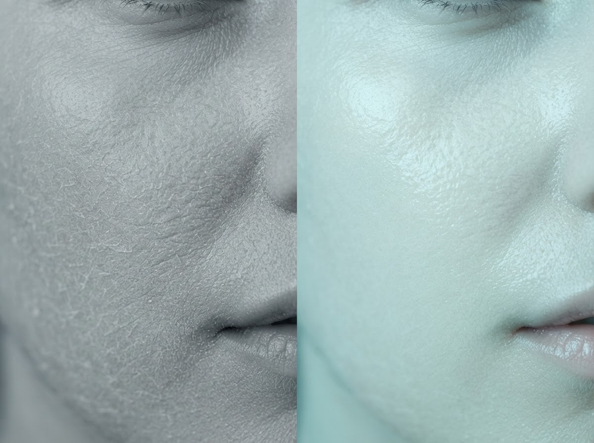
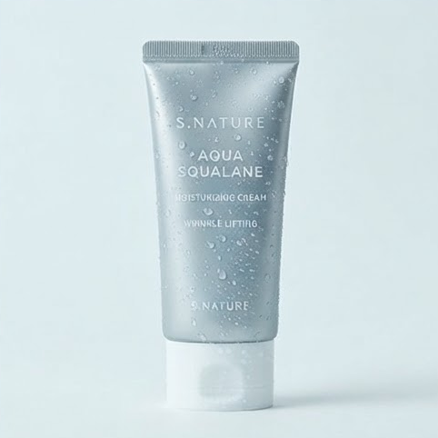

BEFORE & AFTER
수분이 바뀌면
피부 결이 달라집니다
피부 결이 달라집니다
같은 피부 — 아쿠아 스쿠알란 사용 전과 후

BEFORE AFTER
AQUA CARE
수분 케어의 세 가지 순간
쫀쫀한 제형
가볍게 밀착되는 크림 텍스처

아쿠아 수분
스쿠알란 수분이 즉시 스며듭니다

수분광 마무리
번들거림 없는 맑은 윤기
TEXTURE
눈으로 확인하는 보습

듬직한 한 튜브
60ml 데일리 수분 크림
리치 텍스처
끈적임 없는 리치 밀착감
촉촉한 결
수분을 머금은 피부 표면